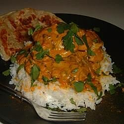

How to make to biriyani

Description
Biriyani is the popular dish in pakistan.This is dish also cooked in india as well.
People serve thier guests with this delicous dish.
Recipe of the Biriyani
- ½ tablespoons olive oili
- 3 tablespoons plain yogurt
- 2 tablespoons distilled white vinegar
- 1 medium onion, sliced
- 2 cloves garlic, crushed
- 1 tablespoon ginger paste
- 2 small green chile peppers
- 2 medium tomatoes, chopped
- 2 tablespoons garam masala
- 1 tablespoon dried mint
- salt and pepper to taste
- 5 sprigs cilantro
- 1 (3 pound) whole chicken, skin removed and cut into pieces
- 2 quarts water
- 4 cups uncooked basmati rice
- 1 bay leaf
- 4 pods green cardamom
- 1 pod black cardamom
- 1 cinnamon stick
- salt to taste
- ¼ teaspoon powdered yellow food coloring
Steps
| Prep : |
15 |
| Cook : |
45 mins |
| Total : |
60 mins |
| Servings : |
12 |
| Yeild : |
12 Servings |